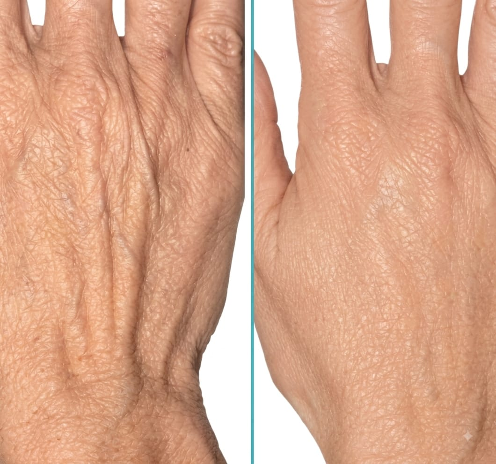
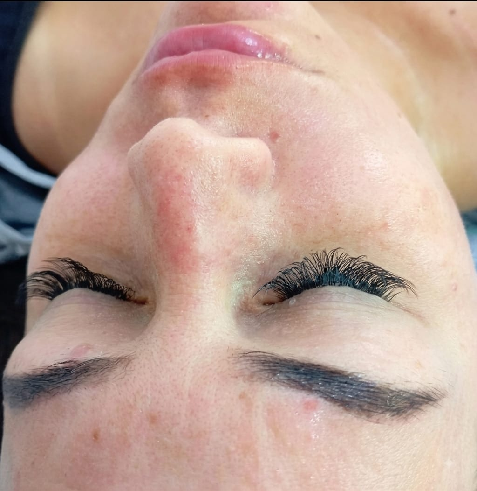

Nuestra misión
Lograr la recuperación integral de la salud cutánea de cada paciente mediante la evaluación detallada de su historial clínico, tratando las afecciones faciales y corporales como condiciones específicas.
Desde el 15 de noviembre de 2016
Nuestra historia
Iniciamos operaciones con un propósito claro: El cuidado integral de la piel. Hoy la organización cuenta con una trayectoria consolidada en el sector estético. Nos destacamos por ofrecer soluciones avanzadas en restauración celular y rejuvenecimiento, con un enfoque profesional, ético y humano.
Resultados que hablan por sí solos
Algunos de los cambios logrados por nuestros pacientes.



